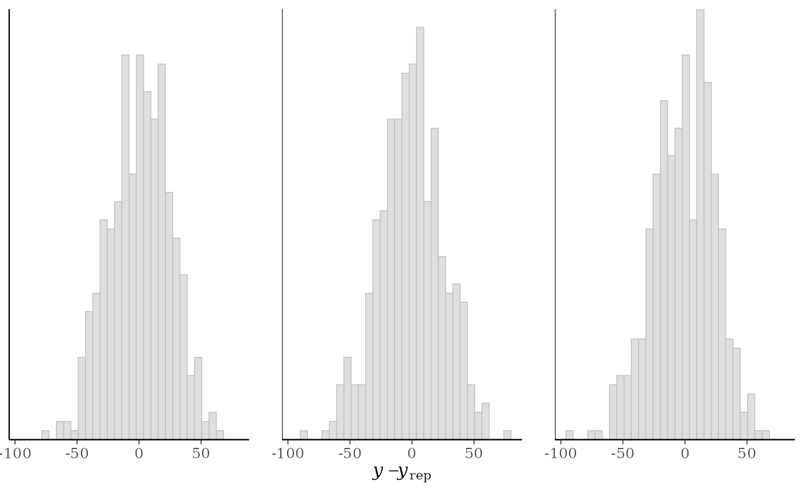
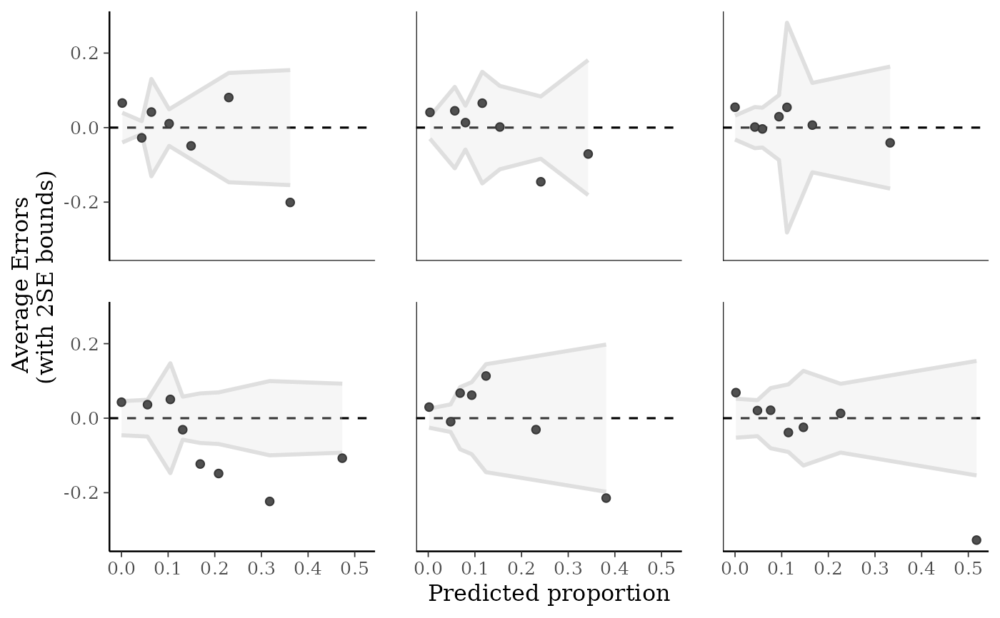
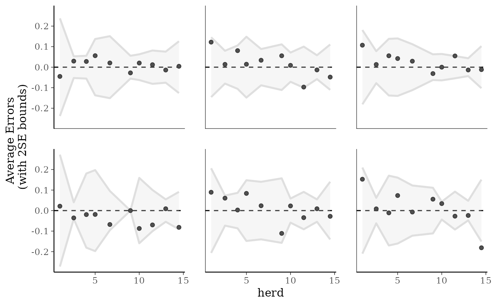
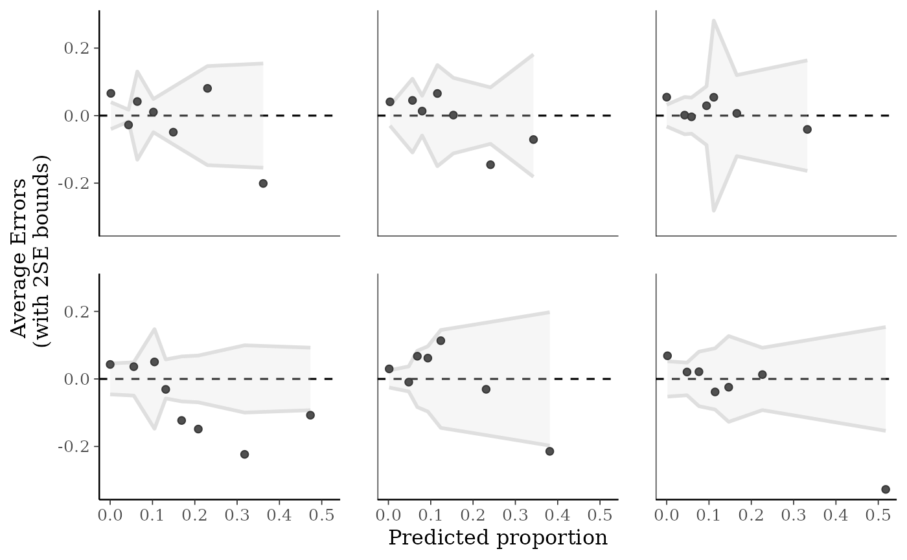
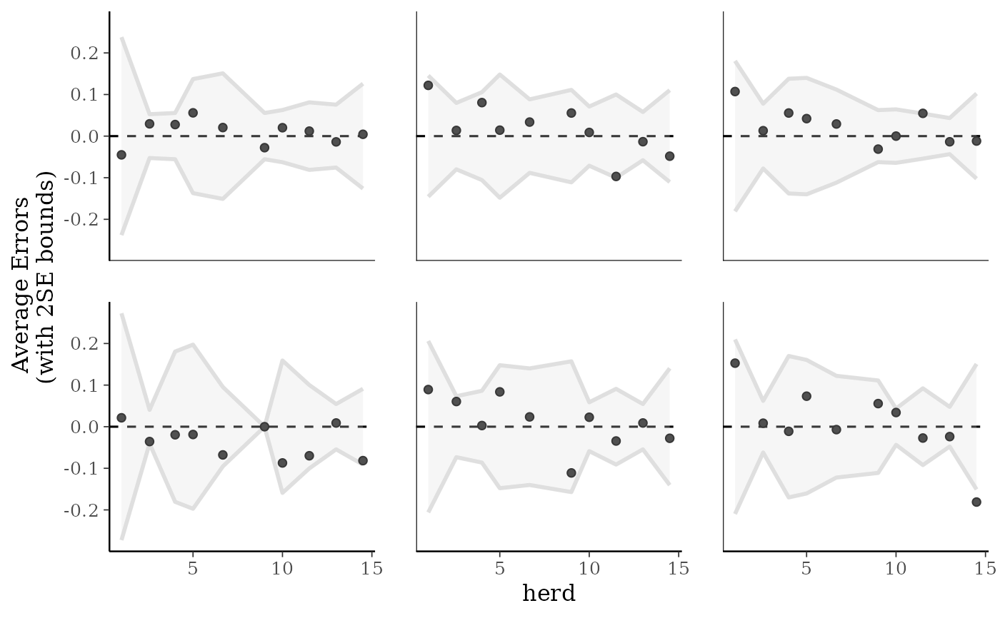

Various plots of predictive errors y - yrep. See the
Details and Plot Descriptions sections, below.
Usage
ppc_error_hist(
y,
yrep,
...,
facet_args = list(),
binwidth = NULL,
bins = NULL,
breaks = NULL,
freq = TRUE
)
ppc_error_hist_grouped(
y,
yrep,
group,
...,
facet_args = list(),
binwidth = NULL,
bins = NULL,
breaks = NULL,
freq = TRUE
)
ppc_error_scatter(y, yrep, ..., facet_args = list(), size = 2.5, alpha = 0.8)
ppc_error_scatter_avg(
y,
yrep,
x = NULL,
...,
stat = "mean",
size = 2.5,
alpha = 0.8
)
ppc_error_scatter_avg_grouped(
y,
yrep,
group,
...,
stat = "mean",
facet_args = list(),
size = 2.5,
alpha = 0.8
)
ppc_error_scatter_avg_vs_x(
y,
yrep,
x,
...,
stat = "mean",
size = 2.5,
alpha = 0.8
)
ppc_error_binned(
y,
yrep,
x = NULL,
...,
facet_args = list(),
bins = NULL,
size = 1,
alpha = 0.25
)
ppc_error_data(y, yrep, group = NULL)Arguments
- y
A vector of observations. See Details.
- yrep
An
SbyNmatrix of draws from the posterior (or prior) predictive distribution. The number of rows,S, is the size of the posterior (or prior) sample used to generateyrep. The number of columns,Nis the number of predicted observations (length(y)). The columns ofyrepshould be in the same order as the data points inyfor the plots to make sense. See the Details and Plot Descriptions sections for additional advice specific to particular plots.- ...
Currently unused.
- facet_args
A named list of arguments (other than
facets) passed toggplot2::facet_wrap()orggplot2::facet_grid()to control faceting. Note: ifscalesis not included infacet_argsthen bayesplot may usescales="free"as the default (depending on the plot) instead of the ggplot2 default ofscales="fixed".- binwidth
Passed to
ggplot2::geom_histogram(),ggplot2::geom_area(), andggdist::stat_dots()to override the default binwidth.- bins
For
ppc_error_binned(), the number of bins to use (approximately).- breaks
Passed to
ggplot2::geom_histogram()as an alternative tobinwidth.- freq
For histograms and frequency polygons,
freq=TRUE(the default) puts count on the y-axis. Settingfreq=FALSEputs density on the y-axis. (For many plots the y-axis text is off by default. To view the count or density labels on the y-axis see theyaxis_text()convenience function.)- group
A grouping variable of the same length as
y. Will be coerced to factor if not already a factor. Each value ingroupis interpreted as the group level pertaining to the corresponding observation.- size, alpha
For scatterplots, arguments passed to
ggplot2::geom_point()to control the appearance of the points. For the binned error plot, arguments controlling the size of the outline and opacity of the shaded region indicating the 2-SE bounds.- x
A numeric vector the same length as
yto use as the x-axis variable.- stat
A function or a string naming a function for computing the posterior average. In both cases, the function should take a vector input and return a scalar statistic. The function name is displayed in the axis-label. Defaults to
"mean".
Details
All of these functions (aside from the *_scatter_avg functions)
compute and plot predictive errors for each row of the matrix yrep, so
it is usually a good idea for yrep to contain only a small number of
draws (rows). See Examples, below.
For binomial and Bernoulli data the ppc_error_binned() function can be used
to generate binned error plots. Bernoulli data can be input as a vector of 0s
and 1s, whereas for binomial data y and yrep should contain "success"
proportions (not counts). See the Examples section, below.
Plot descriptions
ppc_error_hist()A separate histogram is plotted for the predictive errors computed from
yand each dataset (row) inyrep. For this plotyrepshould have only a small number of rows.ppc_error_hist_grouped()Like
ppc_error_hist(), except errors are computed within levels of a grouping variable. The number of histograms is therefore equal to the product of the number of rows inyrepand the number of groups (unique values ofgroup).ppc_error_scatter()A separate scatterplot is displayed for
yvs. the predictive errors computed fromyand each dataset (row) inyrep. For this plotyrepshould have only a small number of rows.ppc_error_scatter_avg()A single scatterplot of
yvs. the average of the errors computed fromyand each dataset (row) inyrep. For each individual data pointy[n]the average error is the average of the errors fory[n]computed over the the draws from the posterior predictive distribution.When the optional
xargument is provided, the average error is plotted on the y-axis and the predictor variablexis plotted on the x-axis.ppc_error_scatter_avg_vs_x()Deprecated. Use
ppc_error_scatter_avg(x = x)instead.ppc_error_binned()Intended for use with binomial data. A separate binned error plot (similar to
arm::binnedplot()) is generated for each dataset (row) inyrep. For this plotyandyrepshould contain proportions rather than counts, andyrepshould have only a small number of rows.
References
Gelman, A., Carlin, J. B., Stern, H. S., Dunson, D. B., Vehtari, A., and Rubin, D. B. (2013). Bayesian Data Analysis. Chapman & Hall/CRC Press, London, third edition. (Ch. 6)
Examples
y <- example_y_data()
yrep <- example_yrep_draws()
ppc_error_hist(y, yrep[1:3, ])
#> `stat_bin()` using `bins = 30`. Pick better value `binwidth`.

# errors within groups
group <- example_group_data()
(p1 <- ppc_error_hist_grouped(y, yrep[1:3, ], group))
#> `stat_bin()` using `bins = 30`. Pick better value `binwidth`.
 p1 + yaxis_text() # defaults to showing counts on y-axis
#> `stat_bin()` using `bins = 30`. Pick better value `binwidth`.
p1 + yaxis_text() # defaults to showing counts on y-axis
#> `stat_bin()` using `bins = 30`. Pick better value `binwidth`.
 # \donttest{
table(group) # more obs in GroupB, can set freq=FALSE to show density on y-axis
#> group
#> GroupA GroupB
#> 93 341
(p2 <- ppc_error_hist_grouped(y, yrep[1:3, ], group, freq = FALSE))
#> `stat_bin()` using `bins = 30`. Pick better value `binwidth`.
p2 + yaxis_text()
#> `stat_bin()` using `bins = 30`. Pick better value `binwidth`.
# }
# scatterplots
ppc_error_scatter(y, yrep[10:14, ])
ppc_error_scatter_avg(y, yrep)
x <- example_x_data()
ppc_error_scatter_avg(y, yrep, x)
# \donttest{
table(group) # more obs in GroupB, can set freq=FALSE to show density on y-axis
#> group
#> GroupA GroupB
#> 93 341
(p2 <- ppc_error_hist_grouped(y, yrep[1:3, ], group, freq = FALSE))
#> `stat_bin()` using `bins = 30`. Pick better value `binwidth`.
p2 + yaxis_text()
#> `stat_bin()` using `bins = 30`. Pick better value `binwidth`.
# }
# scatterplots
ppc_error_scatter(y, yrep[10:14, ])
ppc_error_scatter_avg(y, yrep)
x <- example_x_data()
ppc_error_scatter_avg(y, yrep, x)
 # \dontrun{
# binned error plot with binomial model from rstanarm
library(rstanarm)
example("example_model", package = "rstanarm")
#>
#> exmpl_> if (.Platform$OS.type != "windows" || .Platform$r_arch != "i386") {
#> exmpl_+ example_model <-
#> exmpl_+ stan_glmer(cbind(incidence, size - incidence) ~ size + period + (1|herd),
#> exmpl_+ data = lme4::cbpp, family = binomial, QR = TRUE,
#> exmpl_+ # this next line is only to keep the example small in size!
#> exmpl_+ chains = 2, cores = 1, seed = 12345, iter = 1000, refresh = 0)
#> exmpl_+ example_model
#> exmpl_+ }
#> stan_glmer
#> family: binomial [logit]
#> formula: cbind(incidence, size - incidence) ~ size + period + (1 | herd)
#> observations: 56
#> ------
#> Median MAD_SD
#> (Intercept) -1.5 0.6
#> size 0.0 0.0
#> period2 -1.0 0.3
#> period3 -1.1 0.4
#> period4 -1.6 0.5
#>
#> Error terms:
#> Groups Name Std.Dev.
#> herd (Intercept) 0.76
#> Num. levels: herd 15
#>
#> ------
#> * For help interpreting the printed output see ?print.stanreg
#> * For info on the priors used see ?prior_summary.stanreg
formula(example_model)
#> cbind(incidence, size - incidence) ~ size + period + (1 | herd)
# get observed proportion of "successes"
y <- example_model$y # matrix of "success" and "failure" counts
trials <- rowSums(y)
y_prop <- y[, 1] / trials # proportions
# get predicted success proportions
yrep <- posterior_predict(example_model)
yrep_prop <- sweep(yrep, 2, trials, "/")
ppc_error_binned(y_prop, yrep_prop[1:6, ])

# plotting against a covariate on x-axis
herd <- as.numeric(example_model$data$herd)
ppc_error_binned(y_prop, yrep_prop[1:6, ], x = herd)

# }
# \dontrun{
# binned error plot with binomial model from rstanarm
library(rstanarm)
example("example_model", package = "rstanarm")
#>
#> exmpl_> if (.Platform$OS.type != "windows" || .Platform$r_arch != "i386") {
#> exmpl_+ example_model <-
#> exmpl_+ stan_glmer(cbind(incidence, size - incidence) ~ size + period + (1|herd),
#> exmpl_+ data = lme4::cbpp, family = binomial, QR = TRUE,
#> exmpl_+ # this next line is only to keep the example small in size!
#> exmpl_+ chains = 2, cores = 1, seed = 12345, iter = 1000, refresh = 0)
#> exmpl_+ example_model
#> exmpl_+ }
#> stan_glmer
#> family: binomial [logit]
#> formula: cbind(incidence, size - incidence) ~ size + period + (1 | herd)
#> observations: 56
#> ------
#> Median MAD_SD
#> (Intercept) -1.5 0.6
#> size 0.0 0.0
#> period2 -1.0 0.3
#> period3 -1.1 0.4
#> period4 -1.6 0.5
#>
#> Error terms:
#> Groups Name Std.Dev.
#> herd (Intercept) 0.76
#> Num. levels: herd 15
#>
#> ------
#> * For help interpreting the printed output see ?print.stanreg
#> * For info on the priors used see ?prior_summary.stanreg
formula(example_model)
#> cbind(incidence, size - incidence) ~ size + period + (1 | herd)
# get observed proportion of "successes"
y <- example_model$y # matrix of "success" and "failure" counts
trials <- rowSums(y)
y_prop <- y[, 1] / trials # proportions
# get predicted success proportions
yrep <- posterior_predict(example_model)
yrep_prop <- sweep(yrep, 2, trials, "/")
ppc_error_binned(y_prop, yrep_prop[1:6, ])

# plotting against a covariate on x-axis
herd <- as.numeric(example_model$data$herd)
ppc_error_binned(y_prop, yrep_prop[1:6, ], x = herd)

# }